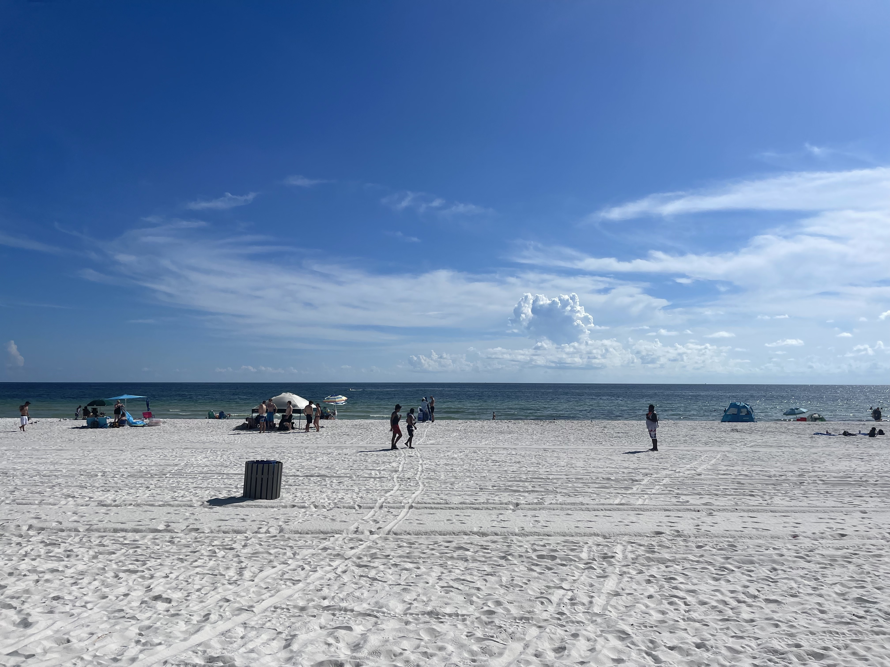
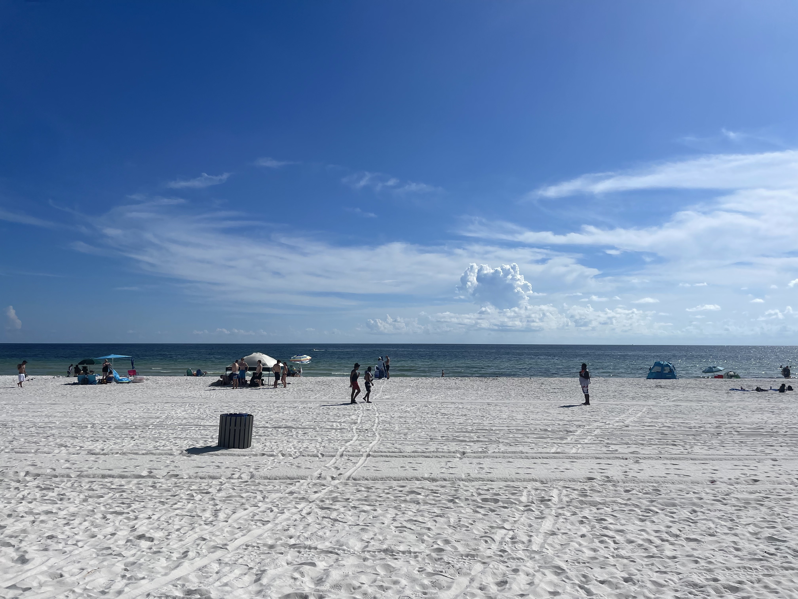

Panama City Beach 2022
Introduction
This past summer my dream of seeing the beach in real life finally came true. My family has never been on vacation, besides visiting relatives every 3 years or so. However, me and my best friend Mckayla have attempted to plan a trip to any beach since we were 15 years old. Finally, in 2022, we decided to stop making excuses and hit the road. The only restriction we faced now was time. With school starting in only a week, we decided to leave on a Thursday, enjoy the beach for 2 days, and drive home Sunday to make it to class Monday morning. Even with our worried parents, and limited time we both knew we needed to be at Panama City Beach by that Friday, so we made it happen.
“It’s jellyfish season ladies! Remember we are entering their fish tank now” -Sharon, our Florida mom
The Beach
Although it was our first time driving 6 hours straight, the trip went smoothly, and we made it to Florida around 8:30 P.M. Our Airbnb was super cute but lacked essentials, which we were made aware of while eating ramen with kitchen tongs that night. We felt like real adults packing our things for the beach the next morning, and downed some fruit loops before departing from our beach home. As we walked closer to the beach, I was honestly so excited. Even after seeing the beach online my whole life, it was magical taking those first steps into the ocean. Not to be dramatic, but it was so much better than I could have imagined, and all the doubts and stress about taking the trip completely disappeared. However, we had overlooked a huge red flag when traveling to the sea in late August. As we waded deeper into the water, we were almost surrounded by jellyfish. We spent the rest of the day tanning in fear and working up random bursts of courage to swim 2 feet past the shoreline.
"The Best Fettuccine I've Ever Had"-Mckayla at Bella Roma

 

Why the Trip Mattered to Me
I find when I visit places for the first time, I love to live the full tourist experience. So, we enjoyed seafront dinners and mini golf for the next two nights. Our favorite place we ate at was an Italian restaurant called “Bella Roma” which exceeded our expectations. The morning before we had to leave, we found a beach with almost no jellyfish at all. Waking up before 10 was a challenge, but we managed to get one last ocean experience before we headed back to O’Fallon 2 hours later than we had planned. Looking back, even though it was such a recent moment in my life, it was such a freeing moment for me. Living at home and working all the time for the past 2 years has proven to be difficult in many ways. To finally feel independent and save the funds for something like this gave me a whole new sense of gratitude. This was a spontaneous adventure for me, even if it may not seem like much, and my anxiety has never dissipated so quickly as when I walked onto the warm sand for the first time.